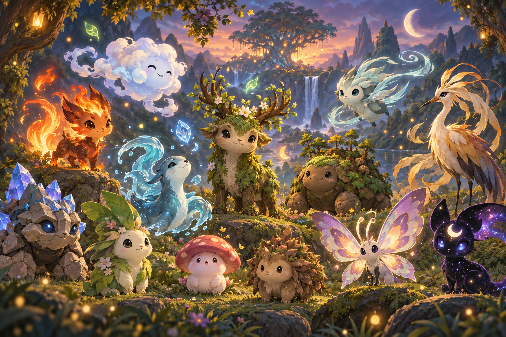

The Zymorai Atlas
151 pocket creatures. One original world.
Each creature has its own element, temperament, power set, signature moves, and portrait. Explore the Atlas — no existing game universe required.

The Zymorai Atlas
Each creature has its own element, temperament, power set, signature moves, and portrait. Explore the Atlas — no existing game universe required.